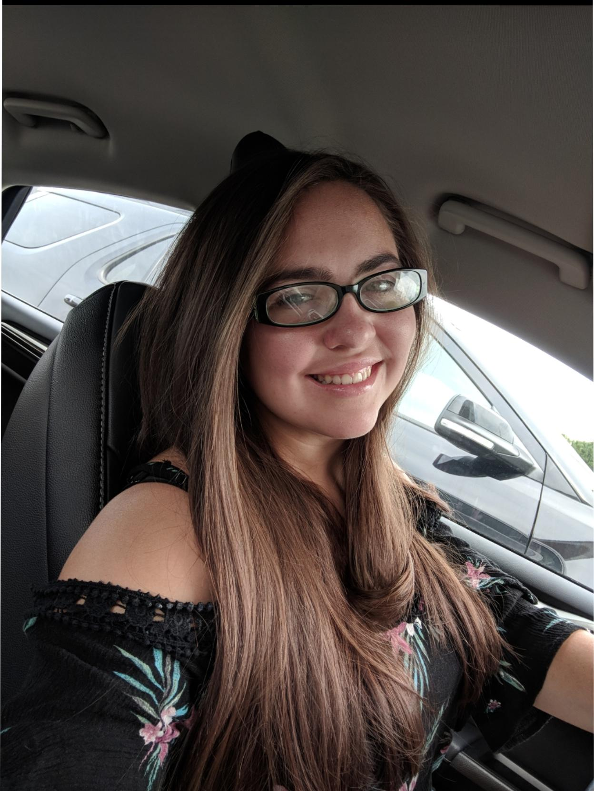

Isabella Whitney Morris

18680 Bungalow Dr.
Lathrup Village, MI 48076
cell: (248)-724-8959 | Email: morrisis@msu.edu
Background
What makes me stand out from others are my diverse learning experiences, my leadership capabilities and my passion in everything
I do. I attended Culver Military Academy for three summers developing my leadership and communication skills, while also having
the priveledge of experiencing cultures, from 39 countries, at a young age and making friends with people from across the globe.
Education
High School Diploma | June 2017 | Southfield Christian School
- Suma Cumlade graduate | GPA 3.8
- National Honors Society and Service Cord
- Always took advanced math and science courses
- Dual Enrollment courses from Cornerstone University | College Algebra and Composition 1
Current Undergraduate Student | Michigan State University
- Major: Media and Information | Focus on Web Design and Development
- Minor: Game Design
Skills & Abilities
Leadership and Communication
- Captain of my High School and travel volleyball teams
- First Commander of my equestrian team at Culver Military Academy at 15 years old
- I play 1st singles for my 3.0 and 3.5 level USTA 18 and over teams at home and throughout the year while at school
- I have enjoyed learning to teach tennis to people of all ages who have a love for the sport!
Organized and Adaptable
- Very Skilled at managing time and responsibilities for school, work, appointments and more.
- I listen and work with others to perform well in changing conditions
- I'm organized in my daily life. Organization for life outside of work is helpful for keeping
organized and happy at work as well
- Completed over 40 hours of community service a year during high school
Experience
MSU Tennis Center Customer Service | Sept 2019 - Current Day
- I love working where i can watch and support the sport i love. I help players and other customers choose equipment
and plan court time into their schedule
Assistant Tennis Coach | Placement Tennis | June 2017 - August 2019
- Taught Tennis skills to children and teenagers with my coach
Assistant Teacher | Temple Emanual Day Care Center | July 2019 - August 2019
- I cared for toddlers and young Children. I learned how to communicate really well with kids
Cashier | Bed Bath and Beyond | May 2018 - August 2018
- Quick math and statistic skills. Communication was a priority while representing the store by being the last person the
customer sees
Engineering Intern | Lucerne International | May 2017 - June 2017
- I had both office and on the floor experience working with parts for the vehicles
Engineering Intern | Ford Motor Company | June 2016 - August 2016
- Experienced data analysis for vehicles in excel for future company improvements, and learned more about working
in a team. I had the privilege of joining my employer in important meetings regarding future vehicle designs